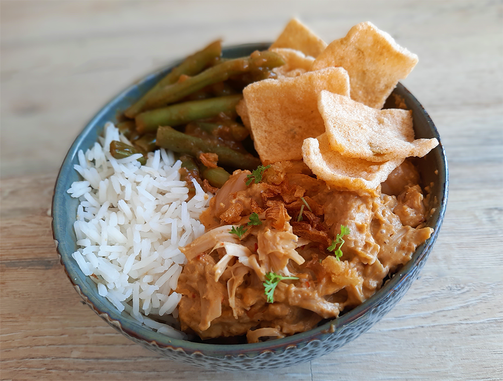

indonesische rendang van jackfruit
Dit bekende Indonesische gerecht is niet gemaakt van vlees maar van jackfruit. De structuur van deze vrucht doet erg denken aan draadjesvlees. Deze rendang is lekker met Indonesische komkommersalade of sajoer boontjes.

Bereidingsduur: 120 minuten
Aantal personen: 3
Ingrediënten:
500 gram jackfruit
400 milliliter kokosmelk
2 uien
4 teentjes knoflook
1 eetlepel sambal
3,5 theelepels gemberpoeder
1 theelepel komijn
2 theelepels korianderzaad
0,5 theelepel kerriepoeder
1 eetlepel palmsuiker
2 stengels citroengras
6 blaadjes kaffir limoen
300 gram basmatirijst
optioneel: enkele takjes koriander
naar wens cassave kroepoek
500 gram jackfruit
400 milliliter kokosmelk
2 uien
4 teentjes knoflook
1 eetlepel sambal
3,5 theelepels gemberpoeder
1 theelepel komijn
2 theelepels korianderzaad
0,5 theelepel kerriepoeder
1 eetlepel palmsuiker
2 stengels citroengras
6 blaadjes kaffir limoen
300 gram basmatirijst
optioneel: enkele takjes koriander
naar wens cassave kroepoek
Instructies:
1. Snijd de uien en knoflooktenen in kleine stukjes. Doe dit kort in een hakmolen tot de stukjes heel fijn zijn. Neem een kom en doe hierin het mengsel. Voeg de sambal, gemberpoeder, komijn, korianderzaad, kerriepoeder en palmsuiker toe en roer goed door elkaar tot een goede boemboe.
2. Laat het jackfruit uitlekken. Verhit ondertussen wat olie in een wokpan of stoofpan en bak hierin de boemboe tot er een goede geur vanaf komt. Kneus de citroengras stengels en voeg samen met de kaffir limoenblaadjes toe aan de boemboe. Snijd het jackfruit eventueel in wat kleinere stukken indien gewenst en voeg samen met de kokosmelk toe aan de pan. Laat dit met deksel erop circa 1,5 uur stoven. Gebruik eventueel een warmhoudplaatje.
3. In de laatste 20 minuten stooftijd kun je alvast de rijst koken en de korianderblaadjes snijden. Afhankelijk van wat je erbij maakt kun je de sajoerboontjes of salade nu klaarmaken.
4. Haal de stengels en blaadjes uit de pan. Garneer de rendang met de korianderblaadjes en serveer met de rijst, de groenten en kroepoek.
1. Snijd de uien en knoflooktenen in kleine stukjes. Doe dit kort in een hakmolen tot de stukjes heel fijn zijn. Neem een kom en doe hierin het mengsel. Voeg de sambal, gemberpoeder, komijn, korianderzaad, kerriepoeder en palmsuiker toe en roer goed door elkaar tot een goede boemboe.
2. Laat het jackfruit uitlekken. Verhit ondertussen wat olie in een wokpan of stoofpan en bak hierin de boemboe tot er een goede geur vanaf komt. Kneus de citroengras stengels en voeg samen met de kaffir limoenblaadjes toe aan de boemboe. Snijd het jackfruit eventueel in wat kleinere stukken indien gewenst en voeg samen met de kokosmelk toe aan de pan. Laat dit met deksel erop circa 1,5 uur stoven. Gebruik eventueel een warmhoudplaatje.
3. In de laatste 20 minuten stooftijd kun je alvast de rijst koken en de korianderblaadjes snijden. Afhankelijk van wat je erbij maakt kun je de sajoerboontjes of salade nu klaarmaken.
4. Haal de stengels en blaadjes uit de pan. Garneer de rendang met de korianderblaadjes en serveer met de rijst, de groenten en kroepoek.